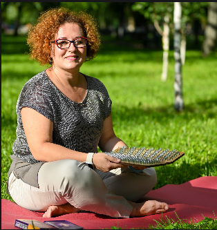

|  |
Олена Зубенко |
HomeGalleryContacts |
Я - Олена, мені 40 років. Я обожнюю працювати з людьми також я - мама сина, кота і щаслива дружина. Колись я зробила собі подарунок на Різдво і 24.12.23 стала з провідником на цвяхи, з тих пір моє життя перевернулось і привело мене на навчання провідника цвяхостояння і фасилітатора енергії Кундаліні. Вважаю такі заняття найкращою інвестицією у свій гармонійний стан, яким хочеться ділитися. Регулярно практикую йогу, саундхілінг, вищезгадані практики для себе, клієнтів і своєї родини. Також я навчаюсь на QA manual в ІТ школі Hillel. |